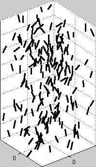

Simulation of fibers suspended in a liquid

A total number of 200 fibers are suspended in a liquid governed by
the Stokes
equations; due to gravity they fall downwards. The system is
here simulated with periodic boundaries in all directions so that
the total flow becomes that of an 'infinite volume'. Note the
increasing concentration in the middle of the box.
The dimensions of the box is 20-by-20-by-40 units and each fiber
is 2 units long.
Does the flow look
different if you only suspend 100 fibers?
Stefan Engblom
Last modified: Fri Sep 6 14:50:29 CEST 2024